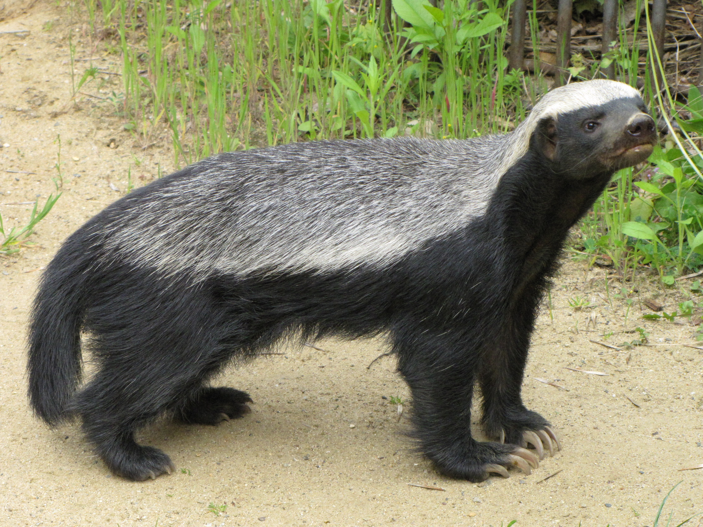

As suggested by both their common and scientific names (Mellivora capensis means "honey eater of the Cape"), honey badgers have always been associated with bees. Apart from man, they are the most destructive mammalian predators of honeybees in Africa and they can and do cause substantial losses to both traditional and commercial beekeepers. While honey is not a necessary part of a honey badger's diet, the highly nutritious bee brood is a sought after delicacy. and this brings them into conflict with beekeepers.
